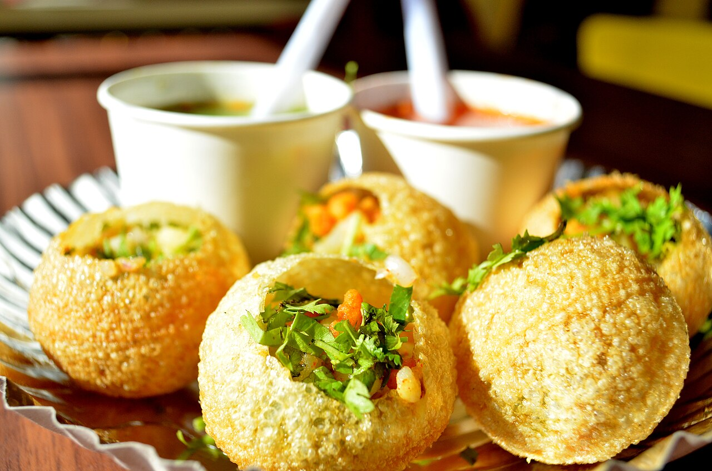
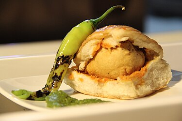
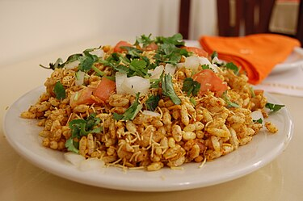
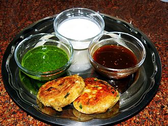

1.Pani Puri

Pani puri has evolved significantly over time. Also known as "golgappa," the dish consists of a small, hollow, fried wheat and/or semolina shell filled with spiced mashed potatoes and served with either a green or a brown-coloured dipping water; or both. This "water" is technically a diluted chutney. Over time, variations of the filling and the flavoured water emerged, reflecting the regional preferences and availability of ingredients. The flavoured water, also known as the "pani," is an essential component of the dish and is often the main source of flavour.
The brown water is known throughout India as khatta meetha pani, which translates to as "sweet and sour water". The main composition of this water is tamarind and jaggery. The hotter alternative to this water, which is also typically the standard dipping green liquid for this dish, is known as theeka pani, which means "spicy water". It consists of herbs like mint and coriander along with green chillies. Both waters can include a garnishing of boondi, a concoction made of fried chickpea flour.[8] Some regional variations also use sweet flavours like fruit juices or dates, as well as many optional toppings like sev.[8]
Bangarapet panipuri is renowned for its distinctive white-colored pani, retaining a spicy kick that has been traditionally handed down through generations.
2.VadaPav

The most common theory of the vada pav's origin is that it was invented in the erstwhile mill-heartland of Central Mumbai. Ashok Vaidya of Dadar is often credited with starting the first vada pav stall outside Dadar railway station in 1966.[7][8][9]: 34 Some sources credit Sudhakar Mhatre who started his business around the same time.[10] One of the earliest kiosks selling vada pav is said to be Khidki Vada Pav, located in Kalyan. It was started in the late 1960s by the Vaze family, who used to hand out vada pavs from a window (Khidki) of their house facing the road.[10]
The carbohydrate-rich snack catered to the cotton mill workers of what was then known as Girangaon. This potato dumpling (batata vada) placed inside a pav was quick to make, cheap (~10-15 paisa in 1971[10][11]), and much convenient over the batata bhaji and chapati combination, which couldn't be eaten in overcrowded local trains.
3.Bhelpuri

Bhelpuri is a savoury snack originally from India, and is also a type of chaat. It is made of puffed rice, crumbled crunchy puri, onions, coriander and tossed with two chutneys: a green spicy coriander chutney[1] and a brown tangy tamarind chutney.[2][3]
Bhel is often identified as a 'beach snack', strongly associated with the beaches of Mumbai, such as Chowpatty or Juhu.[4] One theory for its origin is that, it was invented at a restaurant called Vithal near Victoria Terminus. According to another theory, bhelpuri was conceived by the city's Marathi community, who made it by adding complex flavours to the simple North Indian chaat. Marathi housewives began making it and invented several varieties like the pakodi puri, and as it grew in popularity, many communities made their own regional variations.[5]
4.Aloo tikki

Aloo tikki, also known as aloo ki tikkia, aloo ki tikki or alu tikki, is a snack originating from the Indian subcontinent. In Indian, Pakistani, and Bangladeshi preparation, it is made of boiled potatoes, peas, and various curry spices. Aloo means potato in Hindi-Urdu, and tikki is a small cutlet or croquette. The dish is served hot along with a side of saunth, tamarind, and coriander-mint sauce, and sometimes dahi (yogurt) or chickpeas.[1]
The snack is vegetarian[2] and is an Indian equivalent of the hash brown.Because of the broad geographical distribution of Indian people throughout the world, a number of variations on this dish exist.
In Mumbai, a popular version of aloo tikki is served with a spicy curry and various chutneys. It is called Ragda pattice and is sold at various chaat stalls throughout the city and especially on Chowpatti Beach. The aloo tikki in this region is made of mainly locally grown spices such as turmeric, whereas in Bangalore, more coriander is used.
In the United Kingdom, vegetable tikki is available from delicatessen counters at various shops.[citation needed]
Some North Indian dhabas or café-style eateries will sandwich the aloo in bread.
5.Dahi puri

Dahi puri is an Indian snack food which is especially popular in the state of Maharashtra.[1] The dish is a type of chaat and originates from the city of Mumbai.[2] It is served with mini-puri shells (golgappa), which are also used for the dish pani puri. Dahi puri and pani puri chaats are often sold by the same vendor.Dahi puri is also called 'dahi batata puri' or 'dahi sev puri'. Dahi means yoghurt in Hindi while sev is fried gram flour vermicelli. Batata is a Marathi word for potato